iOS Sample (SipPhone)
SwiftUI · iPhone 16 Pro Simulator
Native SwiftUI app powered by the SipSdk SwiftPM target, VideoToolbox hardware H.264, AVAudioSession + CallKit, live call stats HUD, and blind/attended transfer controls.
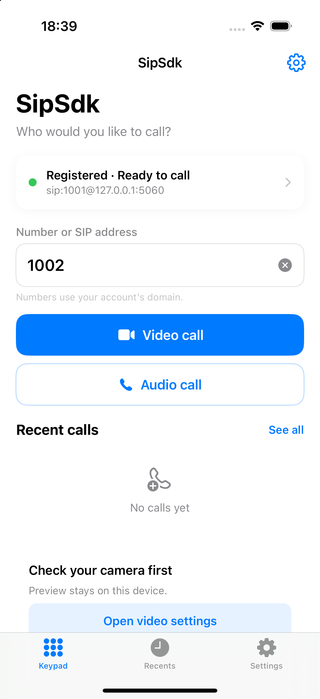
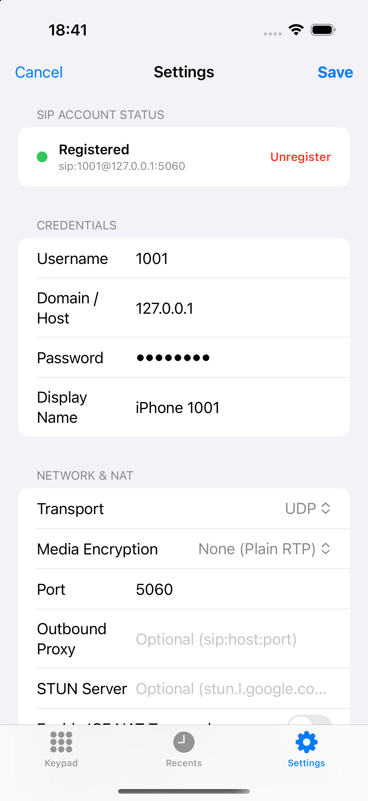
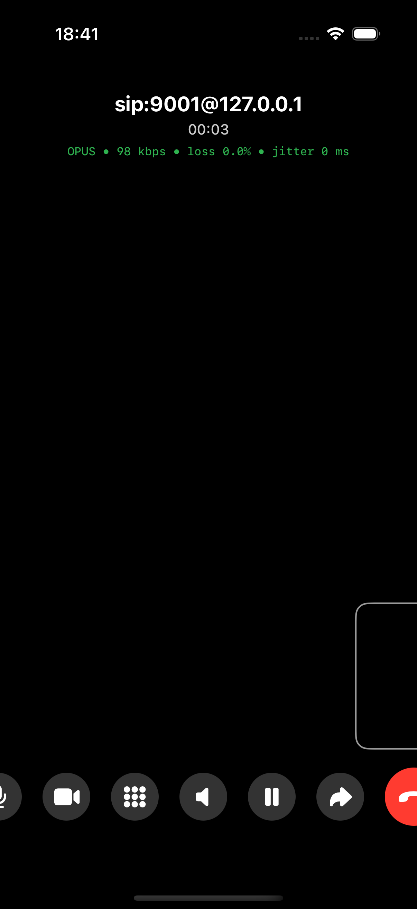
Android Sample (SipSdk Phone)
Jetpack Compose · Android 16 Emulator
Material 3 Jetpack Compose phone backed by JNI libsipcore.so, OpenSL ES audio, Camera2 capture, MediaCodec H.264, and bundled static OpenSSL + Opus.
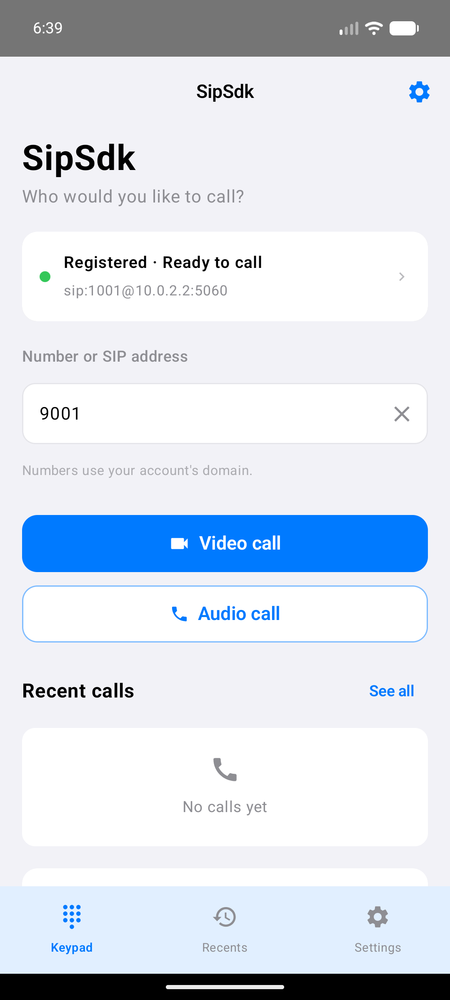
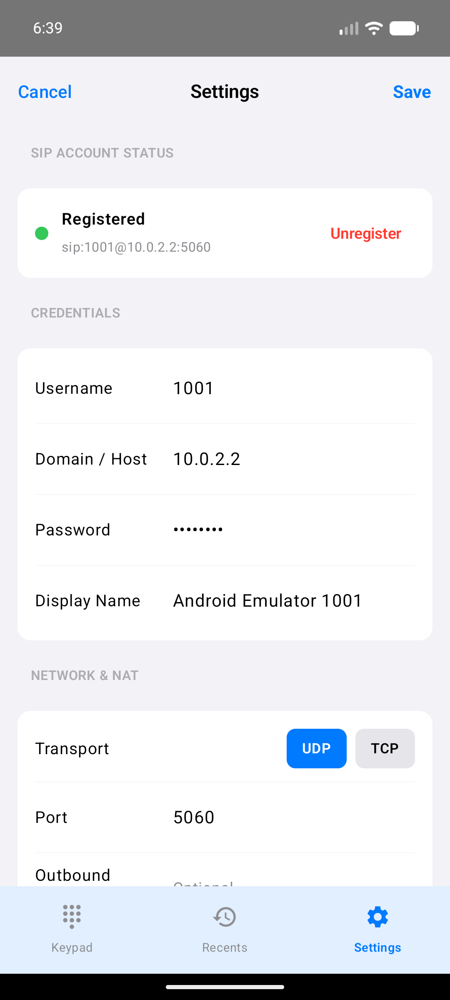
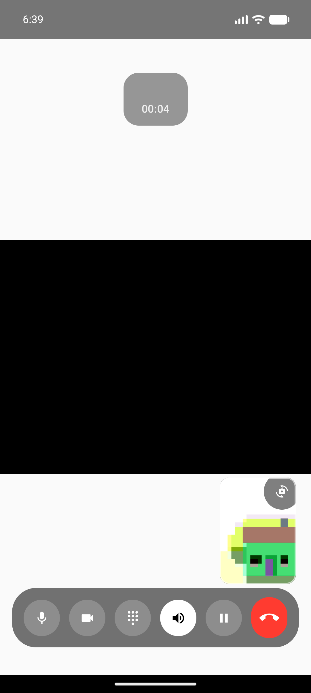
macOS Sample (SipSdkMac)
SwiftUI + Objective-C++ · macOS Native
Native macOS desktop client bridging SipCore via Objective-C++ with CoreAudio input/output switching, AVCaptureSession cameras, and TLS/SRTP configuration.
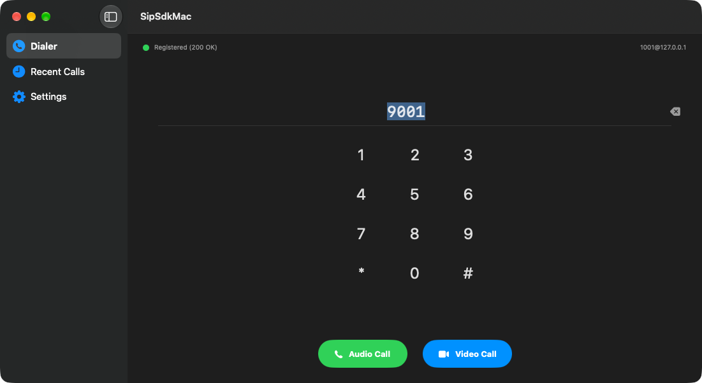
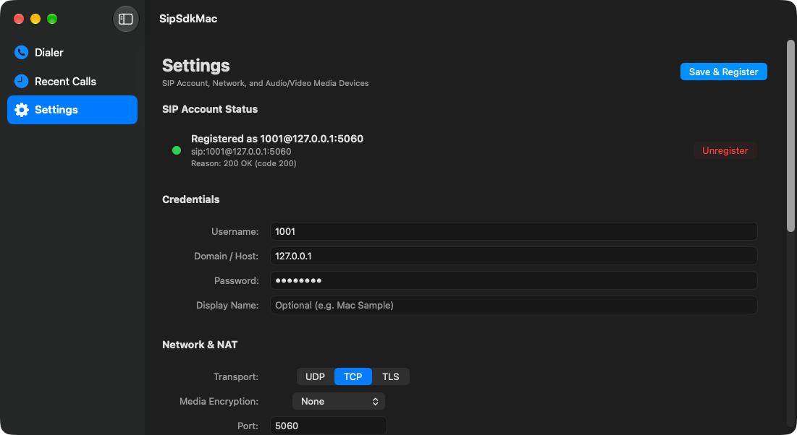
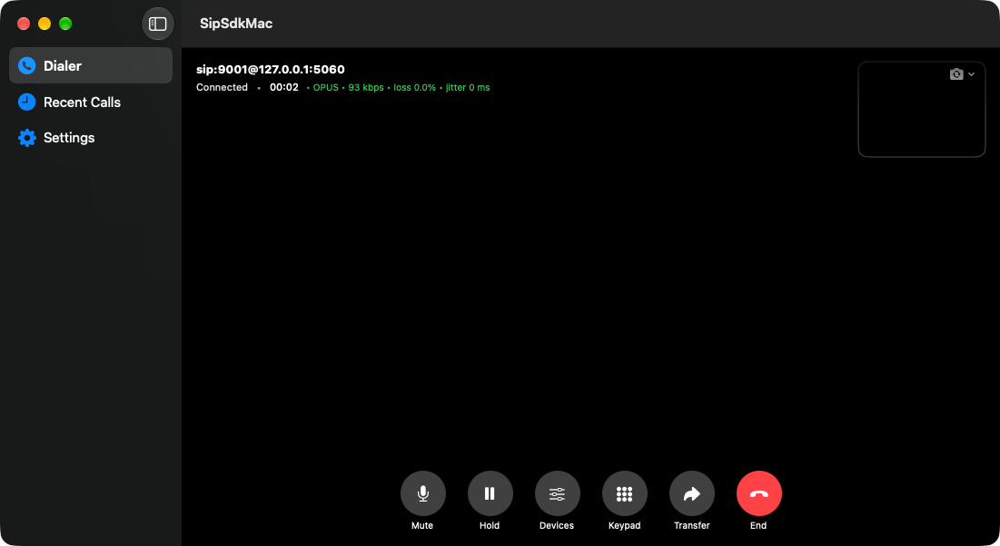
Web SDK Sample & Test Client
JsSIP 3.x + WebRTC · Headless Chrome
Browser ES module wrapper over SIP-over-WebSocket and WebRTC DTLS-SRTP with live RTCPeerConnection.getStats() telemetry, DTMF INFO, hold, and REFER call transfer.
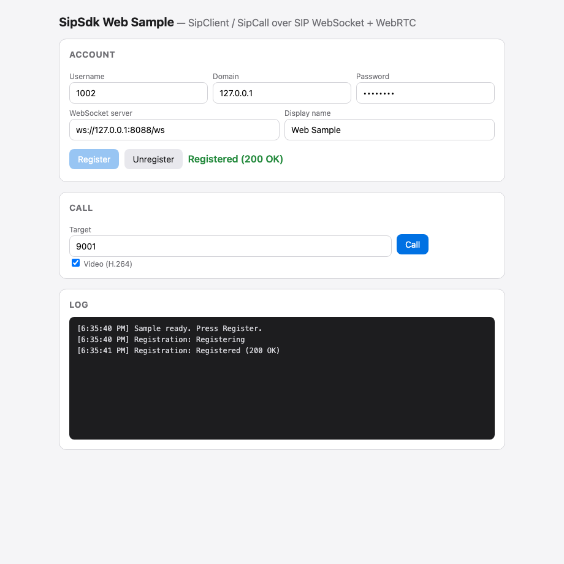
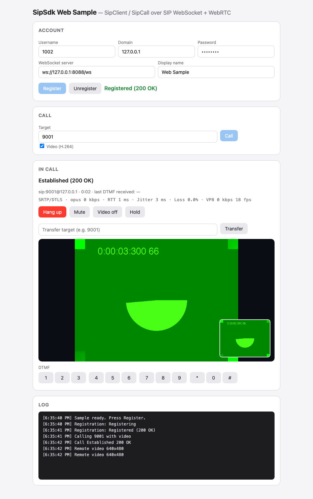
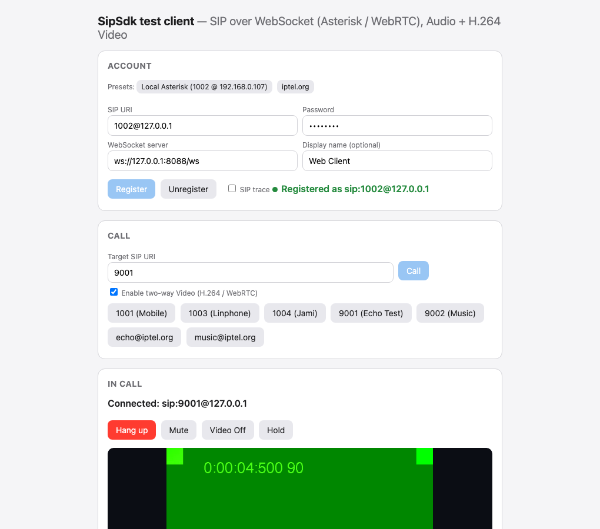
Desktop C++20 SDK & CLI
C++20 · macOS & Linux
Portable C++20 SDK (libsipdesktop) verified on macOS and headless Linux containers, used alongside the sip_cli test runner for automated signaling and media checks.
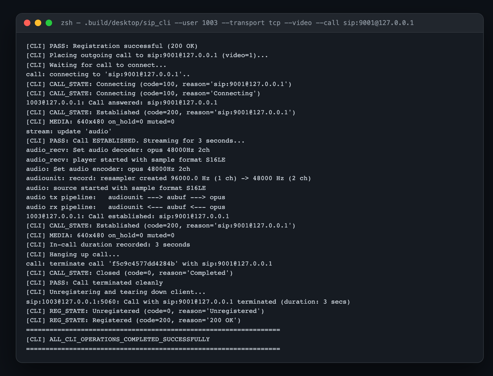
Windows Desktop Sample (SipSdk.WpfSample)
WPF .NET 8 · Windows Host Required for Live UI Capture
Native Windows desktop phone binding sip_abi.h via P/Invoke (.NET 8) with a dark split-pane WPF UI. The Windows `.NET` SDK unit suite and C ABI checks pass locally, while launching the WPF executable requires a Windows host.
Username, Domain/Host, Password, Port, Transport (UDP/TCP/TLS), Register & Unregister actions, and live registration status.
Destination URI, Audio Call / Video Call buttons, active call state + duration, Hold, Mute, Hangup, and 3x4 DTMF keypad.
Full-bleed SipVideoPanel remote renderer with bottom-right Picture-in-Picture local camera preview.